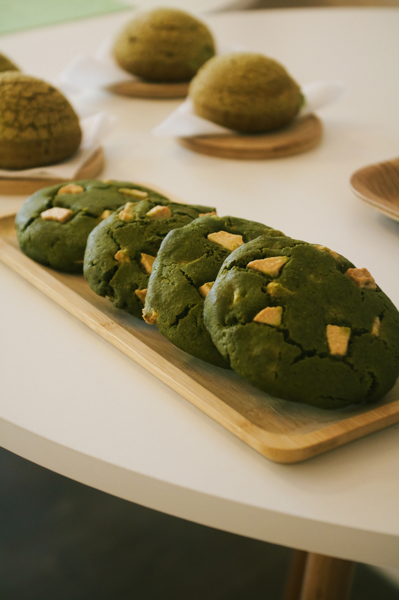
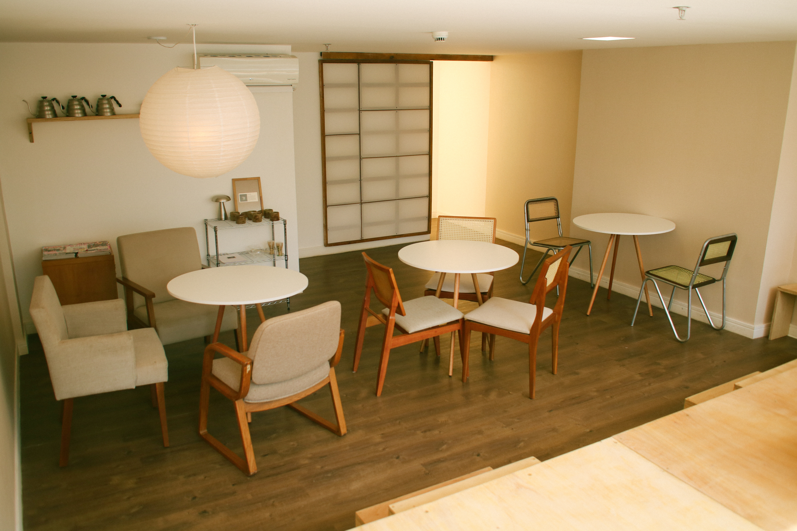
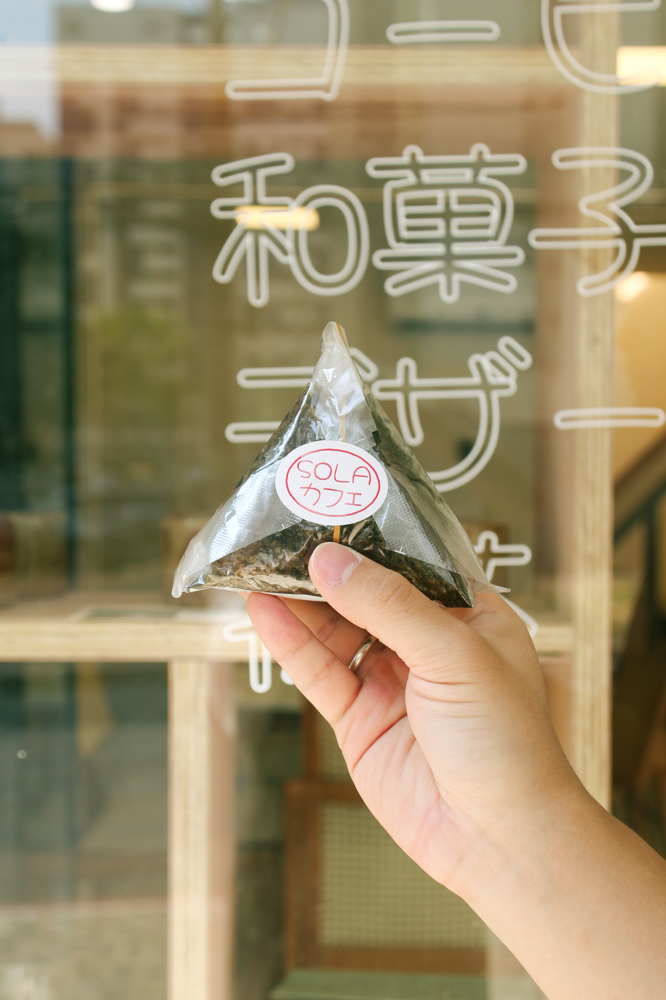

Sobremesa
Panacota Neko
Uma sobremesa cremosa e delicada de panacota de leite tradicional, leite condensado e geleia incolor, finalizada com geleia de frutas vermelhas.
Somos a primeira cafeteria da capital inspirada no Yogashi: a fascinante arte de recriar os doces ocidentais sob o olhar do Japão. Uma união perfeita que combina a leveza e as técnicas da culinária japonesa com o toque clássico da confeitaria ocidental.

Uma sobremesa cremosa e delicada de panacota de leite tradicional, leite condensado e geleia incolor, finalizada com geleia de frutas vermelhas.

Uma versão japonesa da clássica carolina francesa, caracterizada por uma massa incrivelmente leve e crocante recheada com um creme suave e generoso.

Um bolo de pão de ló super leve e aerado, recheado com chantilly fresco e morangos.
O Sola é o resultado de um sonho familiar que germinou por seis anos. Iniciamos nossa jornada no SIG do Sudoeste e hoje encontramos nosso lar definitivo em Águas Claras. Unindo o fascinante mundo dos cafés especiais à delicadeza e hospitalidade da cultura nipônica, nosso espaço foi feito sob medida para quem busca momentos de pausa, lazer e cultura.
conheça nossa história
